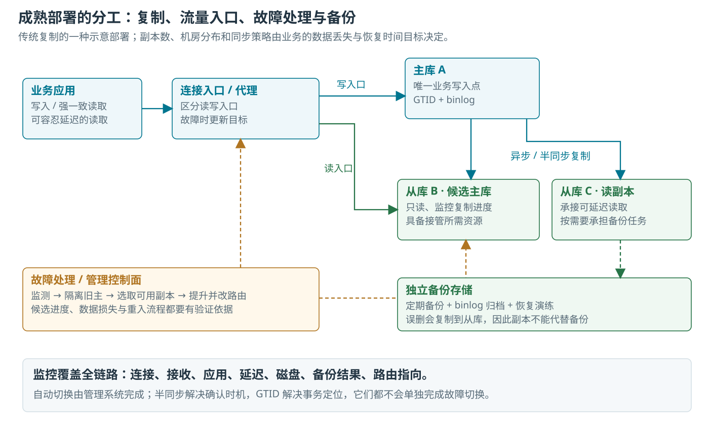

02-02成熟部署与故障切换
能跑起来是一回事，敢放到线上是另一回事。这一页讲的是：谁负责写、谁负责读、出事谁来判、切换按什么顺序做。
一屏速记合上笔记，这 4 条要能自己说出来
- 三个问题三个人管：GTID 管「哪些事务做过」，半同步管「主库什么时候能返回成功」，故障管理管「谁是新主、流量往哪走」。可以叠加，不能互相替代。
- 半同步不等于零丢失：它只保证「至少一个副本收到了日志」，不等于表已改完，超时还会退回异步。
- 切换前必须先让旧主写不进去，再提升副本。联系不上旧主，不等于它已经停了。
- 选型看两个数：允许丢多少数据（RPO）、允许停多久（RTO）。先定这两个，再谈用哪套。
1. 一张图看分工


图里能看出四件事互不替代：复制搬数据，入口决定请求去哪，控制面决定谁当主，备份负责删除之后还能回来。
2. 三条轴，别混为一谈
| 轴 | 它回答的问题 | 它管不到的事 |
|---|---|---|
| 事务标识 | GTID：这个事务我执行过没有？换源后从哪继续？ | 不改变确认时机，不判断数据是否逐行一致。 |
| 确认时机 | 异步 / 半同步：主库什么时候把「成功」返回给业务？ | 不决定谁是主库，也不负责把流量挪走。 |
| 故障管理 | 谁来判断主库不行了、提升哪台、入口怎么改？ | 不修复数据，也不替代备份。 |
所以「用了 GTID 就高可用了吗」「开了半同步就不会丢数据了吗」这类问题本身是混轴了：它们各管一段。
3. 半同步：只把确认往后挪一格
默认异步复制里，主库写完 binlog 就返回成功，从库什么时候收到、什么时候应用，主库不管。半同步把这步改成：至少 N 个副本（默认 1 个）确认事件已写入并刷到 relay log，主库才返回成功。
① 确认的是日志落地，不是表数据已更新——从库还要再应用一次。
② 副本迟迟不确认会超时退回异步，此时保护等于没有，必须监控这个回退，而不是假设它一直生效。
③ 半同步保证「至少一个副本有」，不保证你提升的就是那个副本。真要接近零丢失，得让提升逻辑只挑确认过的那台。
相关参数（8.0.26 起的名字）：rpl_semi_sync_source_enabled、rpl_semi_sync_source_timeout（默认 10000 毫秒）、rpl_semi_sync_replica_enabled，插件要先装。TCP 的 ACK 和半同步 ACK 完全是两回事，别拿前者当后者。
4. 三种路线怎么选
| 路线 | 组成与能力边界 |
|---|---|
| 传统 GTID 主从 | 自己写 binlog 复制，按需加半同步，再配外部故障管理（脚本、中间件、云平台）。最灵活，也最依赖你自己的运维纪律。 |
| InnoDB ReplicaSet | MySQL Shell + Router 管理的一组异步 GTID 复制实例。没有自动故障切换，切换要人发起。 |
| InnoDB Cluster | Group Replication + Shell + Router，通常单主，至少 3 个实例，靠组成员与多数派做自动故障处理。一致性与网络语义和普通 binlog 复制不一样，不是「复制加个开关」。 |
两个具体例子：
- 内部报表库，丢 5 分钟、停 10 分钟都能接受 → 异步主从 + 两副本 + 手工切换就够，别上组复制。
- 订单库，几乎不能丢、停 30 秒都难受 → 半同步（至少一个副本确认）+ 三节点自动故障管理 + 入口自动摘除，代价是写入延迟和运维复杂度都上一个台阶。
5. TLS：从「加密」到「验证对面是谁」
正文里用的 REQUIRE SSL + SOURCE_SSL=1 只做到加密：链路看不见了，但没验证对面那台是不是真主库。证书可以自签，谁都能生成一张。
正式环境要加上身份校验，连接串写全：
STOP REPLICA;
CHANGE REPLICATION SOURCE TO
SOURCE_HOST = 'mysql-a.internal', -- 用证书里的 DNS 名，不是 IP
SOURCE_SSL_CA = '/etc/mysql/certs/ca.pem',
SOURCE_SSL_VERIFY_SERVER_CERT = 1,
SOURCE_AUTO_POSITION = 1;
START REPLICA;
SHOW REPLICA STATUS\GSOURCE_HOST 必须和证书里的名字对得上，写 IP 通常校验失败。位点复制的环境在这里不要顺手重抄旧坐标——改的是连接参数，不是起点；重抄会让它从旧位置重放。
状态里确认 Source_SSL_Allowed、Source_SSL_VERIFY_SERVER_CERT 符合预期，并写进变更记录。没实际连过的配置不要写成「已验证」。
6. 计划内切换：八步
适用：传统 GTID 复制、主从都健康、没有复制过滤、没有手工分叉、旧主还能操作。停机维护、换机器、机房迁移都走这套。
- 停业务写入，隔离所有写入口
不是「通知大家别写」，而是把写入口真的摘掉：改连接串、摘 VIP、关闭写入账号。只要还有一个入口能写，后面所有判断都不可信。
- 旧主设为只读，等事务收尾旧主 · mysql 客户端
SET GLOBAL super_read_only = ON; -- 等已在跑的事务结束，再记下这一刻的集合 SELECT @@GLOBAL.gtid_executed;先只读、后记录。顺序反了会漏掉中间提交的事务。把这串集合抄下来，下一步要用。
- 候选从库确认追平候选从库 · mysql 客户端
SELECT WAIT_FOR_EXECUTED_GTID_SET('uuid-a:1-110', 30);返回
0才能继续。复制这时候要还在跑——先STOP REPLICA再判断，你看到的就只是一个静止的旧位置。返回
1说明还没追上：停下来查原因，别硬切。 - 确认旧主写不进去了，再断复制候选从库 · mysql 客户端
STOP REPLICA; SHOW REPLICA STATUS\G -- 确认没有未应用的 relay log 事件 RESET REPLICA ALL;RESET REPLICA ALL清的是复制通道和 relay log，防止它重启后连回旧主。它不是防双写的手段——防双写靠的是第 1 步真的关掉了写入口。 - 新主转为可写并固化角色新主 · mysql 客户端
SET GLOBAL super_read_only = OFF; SET PERSIST read_only = OFF;写进持久化配置，别让一次重启把它变回只读。
- 改业务入口，做一次真实写读
把连接串指向新主，然后真的写一条、再从应用侧读回来。只看端口通不通不算验证。
- 其余副本改源其他从库 · mysql 客户端
STOP REPLICA; CHANGE REPLICATION SOURCE TO SOURCE_HOST = '新主地址', SOURCE_USER = 'repl', SOURCE_PASSWORD = '…', SOURCE_AUTO_POSITION = 1, SOURCE_SSL = 1; START REPLICA;GTID 下不用找位点，改完直接起。逐个确认两个
Running为Yes，再写一条数据看能不能过去。 - 旧主隔离观察，再决定要不要回收
先把旧主放着不管（只读、入口已摘），确认它上面没有新写入、没有分叉，再按从库重新接入；接不上就重建。监控和备份要跟着改指向，否则备份还在备旧主。
7. 非计划故障
网络分区、机器假死、只挂了一半的链路，都会让旧主还活着并在接受写入。所以在提升任何副本之前，先用基础设施把它隔离：关机、断网、摘 VIP、吊销写入账号——能确认它写不了，才谈提升。
旧主彻底读不到、拿不到它最后的 gtid_executed 时，就无法证明零丢失。这时只能拿候选副本的数据、已收到未应用的 relay log 去估损，并把这个决定写进事故记录。
不存在「连不上就跳过停写、一键提升」的通用脚本。真那么做，双写和数据分叉是迟早的事。
能读到时，按第 6 节的顺序做，只是第 1、2 步要抢时间；读不到时，先隔离、再评估丢多少，最后才改路由。
8. 上线验收清单
| 检查项 | 合格标准 |
|---|---|
| 实例标识 | 每台 server_id 唯一、server_uuid 不重复，没有从别处整目录拷来的实例。 |
| 只读与复制 | 从库 read_only + super_read_only 都开，同时 applier 能正常写入。 |
| 备份 | 独立于副本的定期备份 + binlog 归档 + 做过恢复演练，保留窗口覆盖复制中断的最长修复时间。 |
| 监控 | 两个线程、worker 错误、真实延迟（成对坐标）、relay log 与磁盘增长、半同步是否退回异步。 |
| 延迟治理 | 大表有主键或可用索引、事务别太大；先定位瓶颈再调并行度。 |
| 读一致性 | 写完立刻要读新值的场景走主库，或用明确的一致性策略，别默认从库马上有。 |
| 持久性 | sync_binlog=1 与 innodb_flush_log_at_trx_commit=1 能提高持久性，但不承诺任何故障下绝对不丢。 |
自测三问先自己答，再展开对照
Q1开了半同步，是不是就不会丢数据了？
不是。它只保证「至少一个副本收到了日志并刷盘」，而且超时会退回异步。更关键的是：如果你提升的不是那台确认过的副本，丢数据照样发生。
要接近零丢失，确认范围、提升规则、超时告警三件事得配套。
Q2主库连不上了，能不能直接把从库提升为主库？
先隔离，再提升。连不上可能是网络分区，旧主仍在接受写入；此时提升就是双写。
先确认它写不了（关机/断网/摘入口），再判断候选副本追到哪，之后才改路由。旧主最后的集合读不到时，只能估损并记录。
Q3计划内切换，为什么必须「先设只读、再记录 gtid_executed」？
顺序反了，记录之后还会有事务提交进来，候选副本按那个集合去等就永远等不到终点。
先让旧主写不进去，等已有事务结束，再记录，这个集合才是真正的终点。
资料
官方文档：半同步复制 · 加密连接 · 切换与故障转移 · InnoDB ReplicaSet · InnoDB Cluster
核对日期 2026-11-26。本页是文档整理，没有在真实集群上执行过切换演练；切换流程上线前请在自己的环境里走一遍。